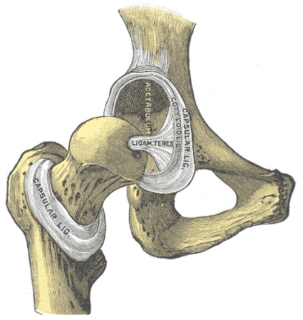

Femoro-Acetabular Impingement
James Kingsmill
2015
Background Info
Outline
Anatomy
Causes
Symptoms
Treatments
Where does AT fit in?
Anatomy of a Hip
Types of FAI
Cam
Pincer
Mixed
Causes
...Correction
Predisposing Factors
Young
...often
Active
...usually
Male
...mostly
Activities
Football
Dancing
Martial Arts
Meaning...
Large Hip ROM
Axial Loading of Hip
Torsional Forces
Symptoms
Walking Patterns
Antalgic Gait
Trendelenburg Gait
Brandenburg Gate

Positive Impingement Test
90% of FAI sufferers test positive
Volunteer?
False Positives
(Other Possible Causes)
Hip dysplasia
Avascular necrosis
You mean when your mentor turns into a zombie?
No, that's avuncular necrosis.
Slipped Capital Femoral Epiphysis
Is that a thing?
Legg-Calvé-Perthes Disease
Stop making these up.
Diagnosis
Xray
MRI
MRA
CT Scan
Damage
Cartilage damage
Labral tears
Osteoarthritis
Treatments
Non-Surgical
NSAIDs
Cortisone
Physiotherapy
Massage
Root cause?
Surgical
Joint Reshaping
Labral Repair
Cartilage Regrowth
Ligament Repair
Types
Open Surgery
Arthroscopy
Open Surgery
Turn away now if you're squeamish
Seriously
Arthroscopy
It's not any more pleasant
Post-Operative Treatment
Motor Control Strategies
Hip Weakness
Postural Misalignment
Initial Regime
Improving ROM
Light stretching
Core Stabilisation
TrA, Pelvic Floor
Gluteal Activation
Bridging, Clams, Mule Kicks, Drinking Bird
Advanced Regime
Functional Movements
Squats, Lunges
Stability Exercises
Wobble Boards, Dynadiscs
Impact Exercises
Hopping, Landing
Where do we come in?
Diagnosis and Referral
Rehabilitation
"Generally, motor control retraining is more important than strength or power of individual muscles."
- Fowler Kennedy Sports Medicine Clinic
AT teachers are experts at:
Observing movement patterns
Retraining motor control
Rewiring the software
What are we not experts at?
Conclusion
Questions?
References
Femoral Acetabular Impingement, Pate (http://dcpracticeinsights.net/mpacms/dc/article.php?id=53605)
Femoroacetabular Impingement, Magill et al (http://benthamopen.com/contents/pdf/TOSMJ/TOSMJ-4-75.)pdf
Surgical Treatment of Femoroacetabular Impingement, AMA (http://www.bcbsks.com/customerservice/Providers/MedicalPolicies/policies/policies/SurgicalTreatment_FemoroacetabularImpingement_2014-10-15.pdf)
Radiographic Prevalence of Femoroacetabular Impingement in a Young Population with Hip Complaints Is High, Ochoa et al (http://www.ncbi.nlm.nih.gov/pmc/articles/PMC3049607)
Current concepts in management of femoroacetabular impingement, Wilson et al (http://www.ncbi.nlm.nih.gov/pmc/articles/PMC3557322)
Hip Arthroscopy Protocol for Femoroacetabular Impingement, Fowler Kennedy Sports Medicine Clinic (http://fowlerkennedy.com/wp-content/uploads/2013/04/Hip_Protocol_for_Arthroscopy_of_Femoroacetabular_Impingement.pdf)
Femoro-acetabular Impingement (FAI), running-physio.com (http://www.running-physio.com/femoro-acetabular-impingement-fai)
Hip FAI and Labral Tear: Diagnosis to Treatment (https://hipfai.wordpress.com)
Femoroacetabular Impingement – Etiology, Diagnosis, and Treatment of FAI, Reinold (http://www.mikereinold.com/2011/03/femoroacetabular-impingement-etiology-diagnosis-and-treatment-of-fai.html)
FemoroAcetabular Impingement (FAI), Park Clinic Orthopaedics (http://www.parkclinic.com.au/home/conditions-treatment/hip/femoroacetabular-impingement-fai)
Slipped capital femoral epiphysis, Wikipedia (http://en.wikipedia.org/wiki/Slipped_capital_femoral_epiphysis)
Legg–Calvé–Perthes disease, Wikipedia (http://en.wikipedia.org/wiki/Legg%E2%80%93Calv%C3%A9%E2%80%93Perthes_disease)
Septic Arthritis, Wikipedia (http://en.wikipedia.org/wiki/Septic_arthritis)
Hip Dysplasia (Human), Wikipedia (http://en.wikipedia.org/wiki/Hip_dysplasia_(human))